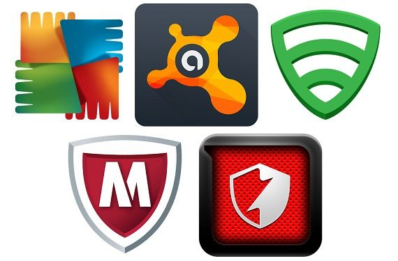
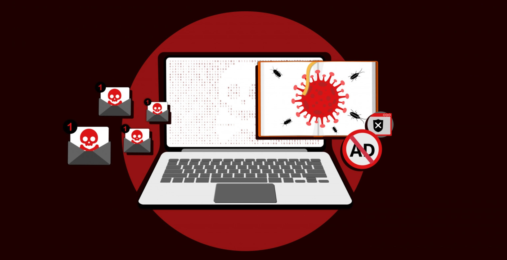
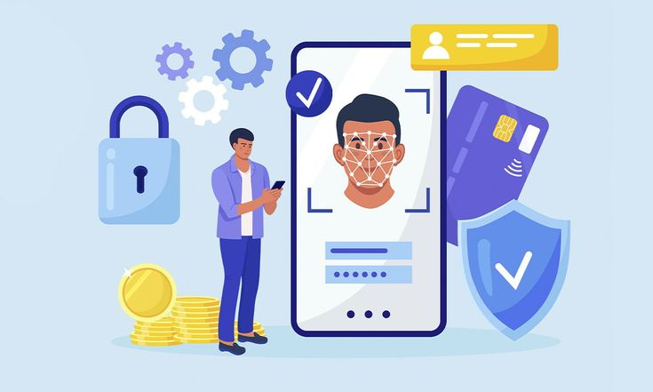
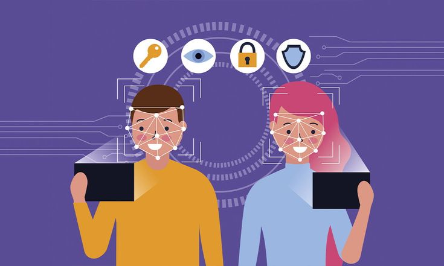
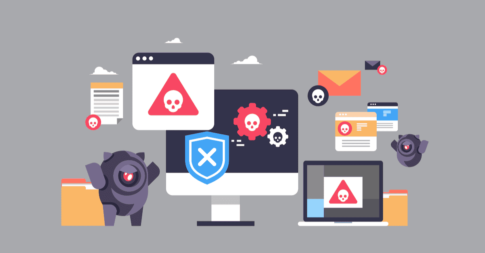

Protección contra Malware
Aprende cómo proteger tu dispositivo y tus datos contra el malware con estos consejos esenciales.
1. Instala un Software Antivirus
Un software antivirus confiable puede detectar y eliminar malware antes de que cause daño. Asegúrate de mantener el antivirus actualizado y realizar análisis regulares de tu sistema.
2. Mantén tu Sistema Operativo y Aplicaciones Actualizadas
Las actualizaciones de software suelen incluir parches de seguridad para proteger contra nuevas amenazas. Configura tu sistema operativo y aplicaciones para que se actualicen automáticamente.
3. No Hagas Clic en Enlaces Sospechosos
Los enlaces en correos electrónicos, mensajes o sitios web pueden dirigir a sitios maliciosos. No hagas clic en enlaces sospechosos y verifica siempre la fuente antes de acceder.
4. Utiliza Contraseñas Seguras
Las contraseñas seguras pueden protegerte contra ataques de fuerza bruta. Utiliza contraseñas únicas y complejas para cada cuenta y cambia tus contraseñas regularmente.
5. Activa la Autenticación de Dos Factores (2FA)
La autenticación de dos factores añade una capa adicional de seguridad. Además de tu contraseña, necesitarás un código enviado a tu dispositivo móvil para acceder a tu cuenta.
6. Evita Descargas de Fuentes No Confiables
Descargar archivos de sitios no confiables puede llevar a infecciones de malware. Solo descarga software y archivos de fuentes oficiales y conocidas.
